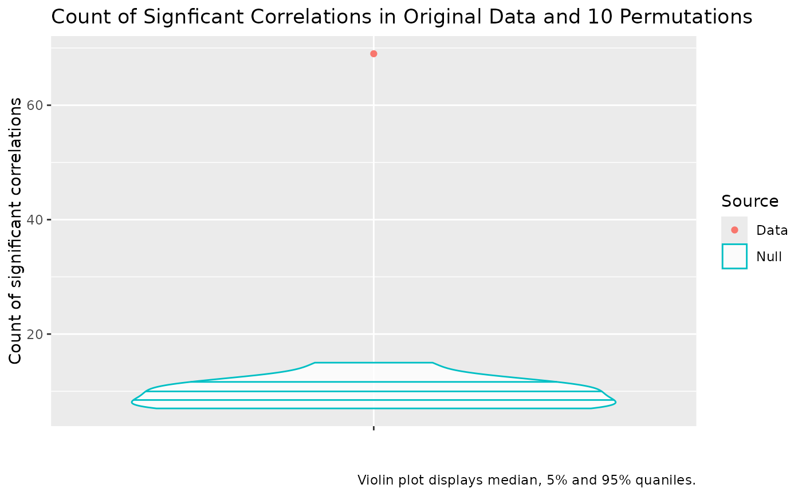
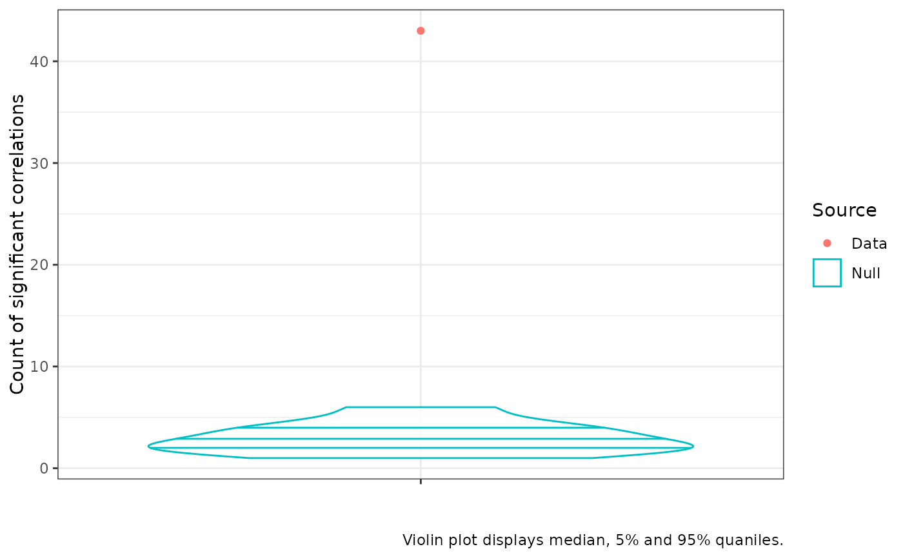

Plot of correlation counts from correlation_test object
plot_correlation_counts.RdPlot the number of statistically significant pairwise correlations in a data set given an alpha value against the distribution of counts of statistically significant pairwise correlations in permuted data. This is an informal test which is useful to convincing yourself that there is structure in your data which PCA might be able to uncover.
Details
The resulting plot presents the distribution of counts of statistically significant correlations at a given alpha level in the permuted data and the count of statistically significant correlations in the original data. If the red dot is above the uppermost line inside the blue violin plot, we say the number of statistically significant correlations in the real data is itself statistically significant. Usually this is used as a rough sanity check in the course of a PCA workflow and we want to see the red dot well above the violin (as in the example below).
The resulting plot is a ggplot2 plot and can be modified using functions
from that package. For instance, titles can be removed using the ggplot2::labs()
function (as in the examples below).
Examples
# Test correlations (use at least n = 100)
cor_test <- correlation_test(onze_intercepts |>
dplyr::select(-speaker), n = 10)
cor_plot <- plot_correlation_counts(cor_test)
cor_plot

# make statistical test more strict by reducing the alpha.
cor_plot_strict <- plot_correlation_counts(cor_test, alpha = 0.01)
# modify plot using `ggplot2` functions, e.g.
cor_plot_strict +
ggplot2::labs(title = NULL) +
ggplot2::theme_bw()
